Dairy-free swap guide: Whole-milk yogurt → Coconut yogurt, Butter → Vegan butter, Heavy cream → Coconut cream, Heavy cream → Soy cooking cream · made 2026-10-27T04:47:38.474Z · run cost $0.000
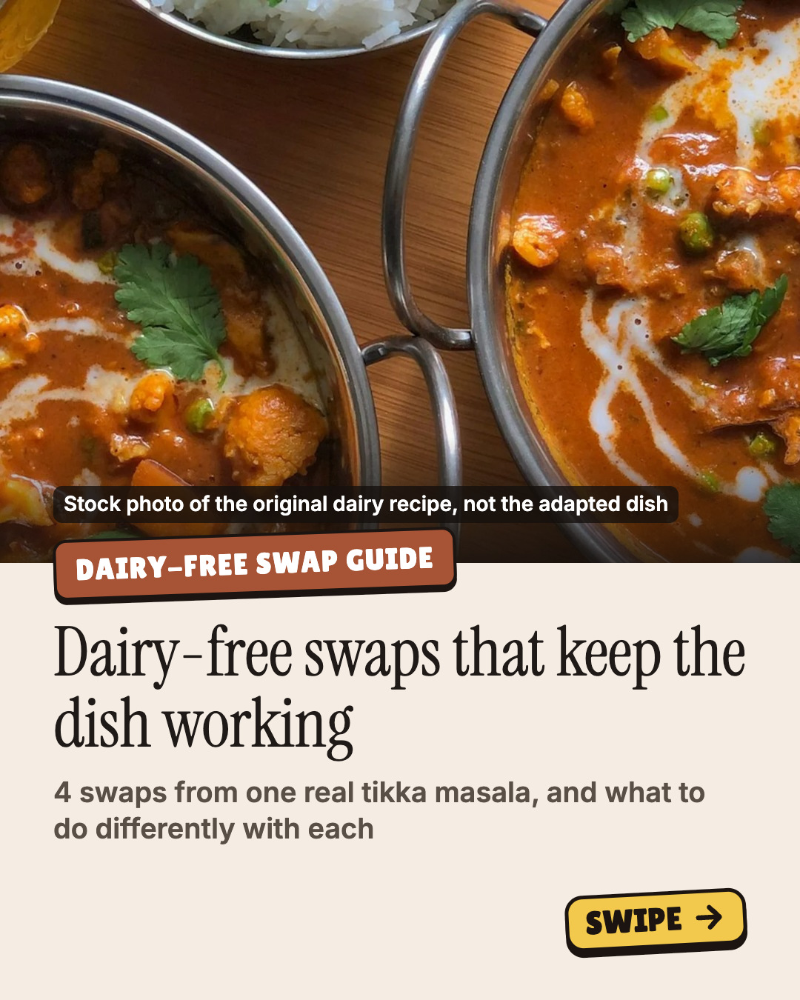
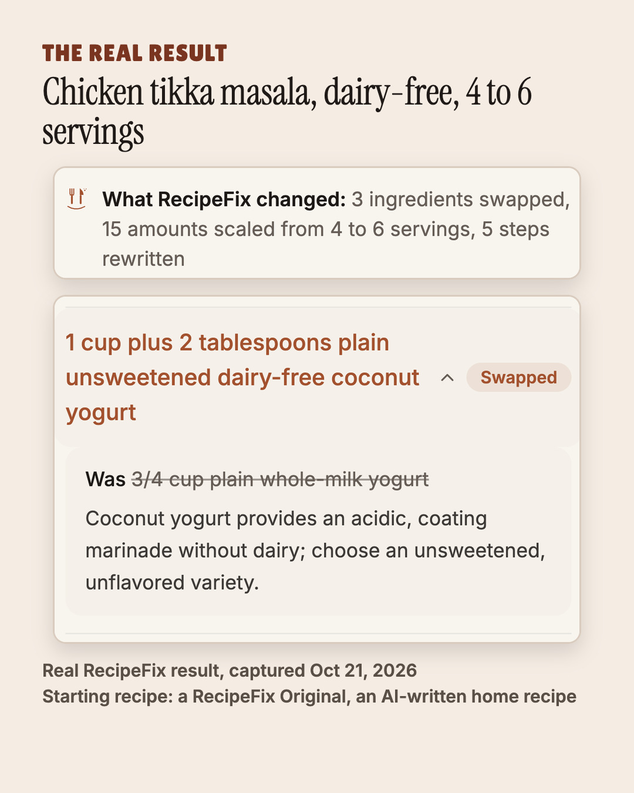
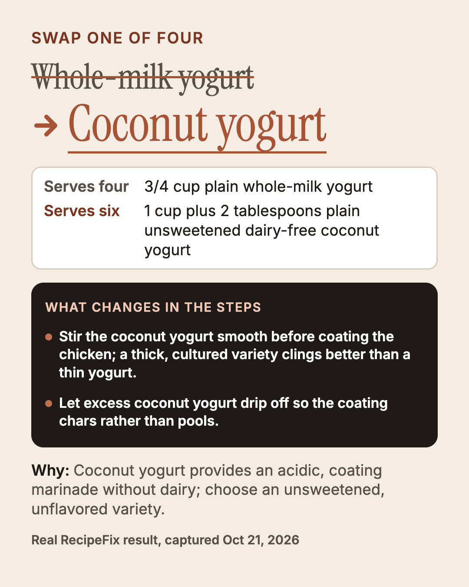
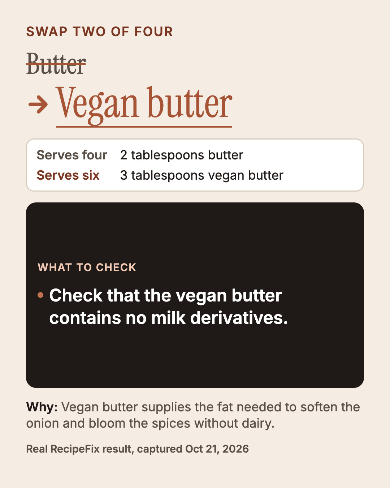
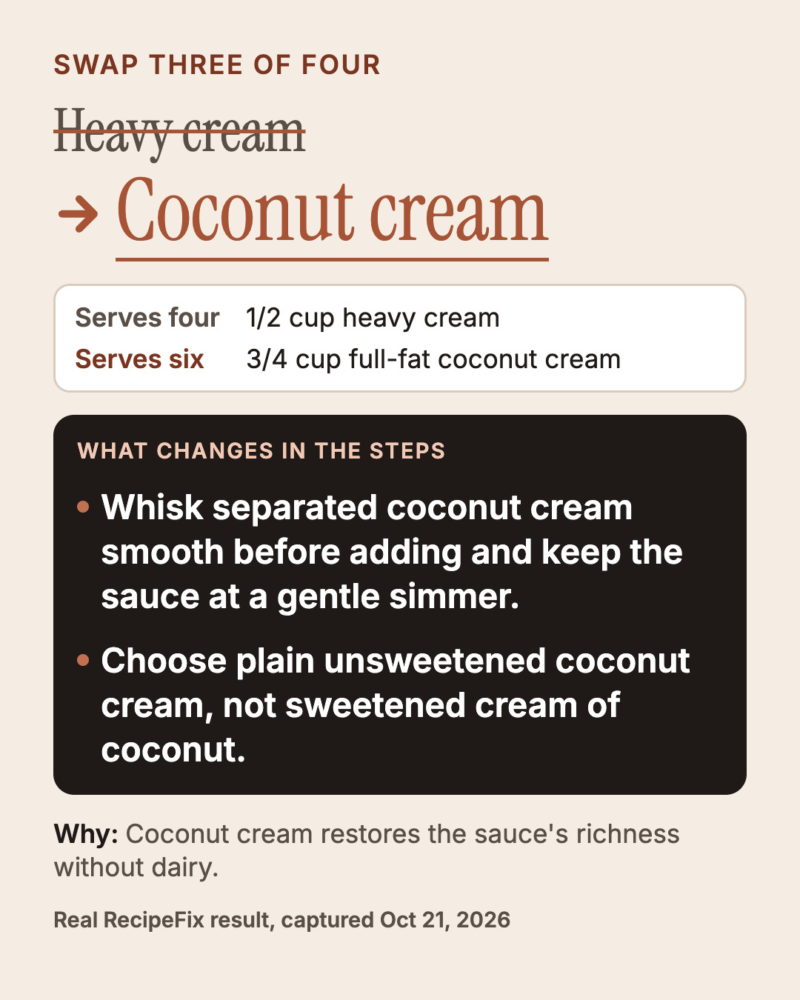
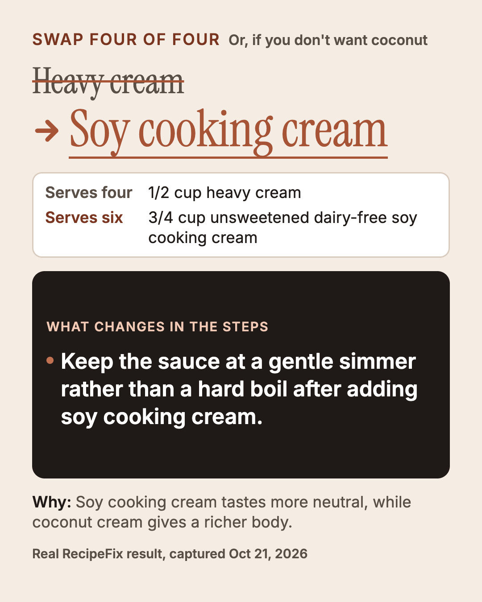
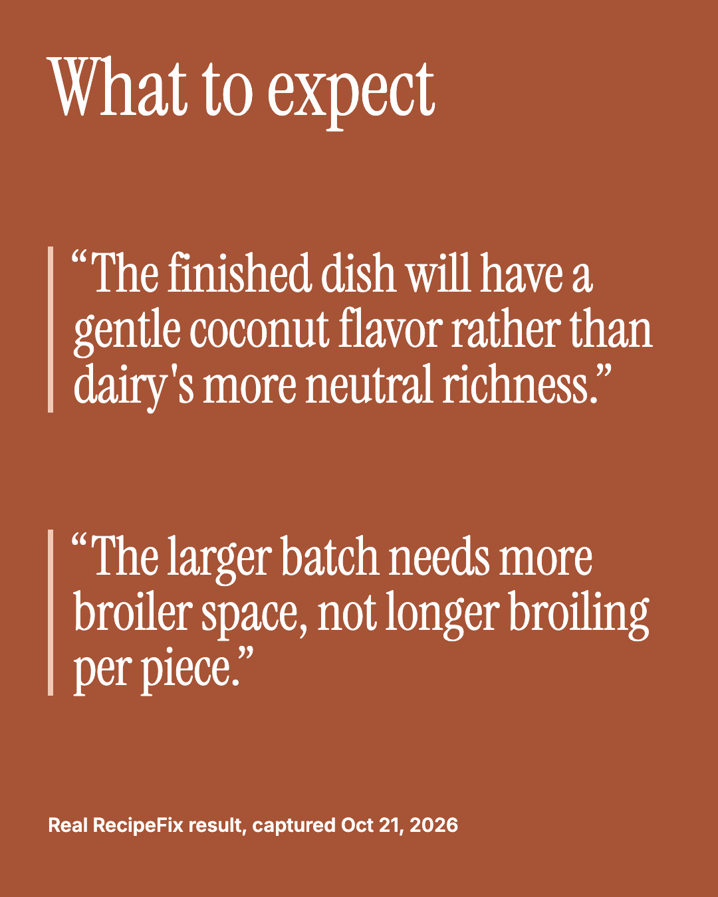
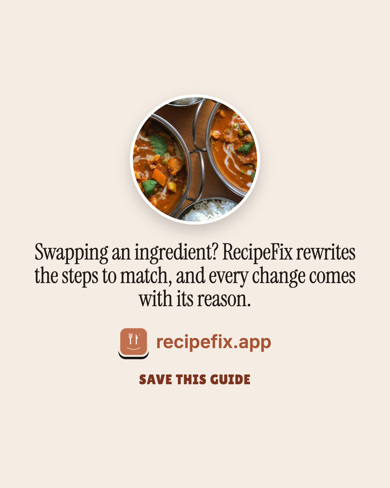
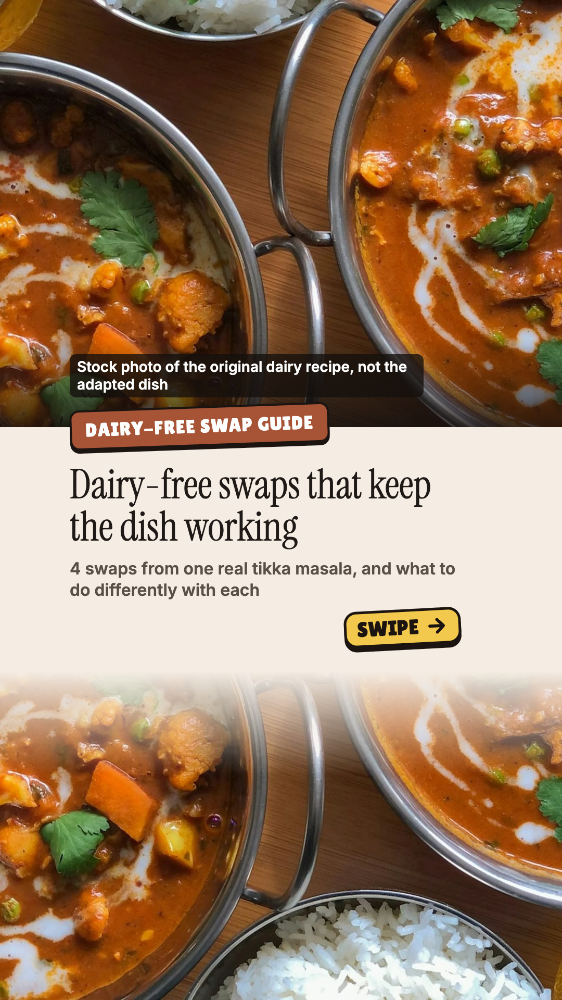
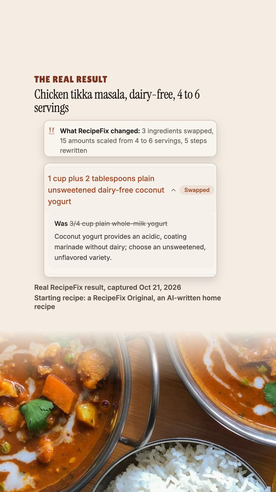
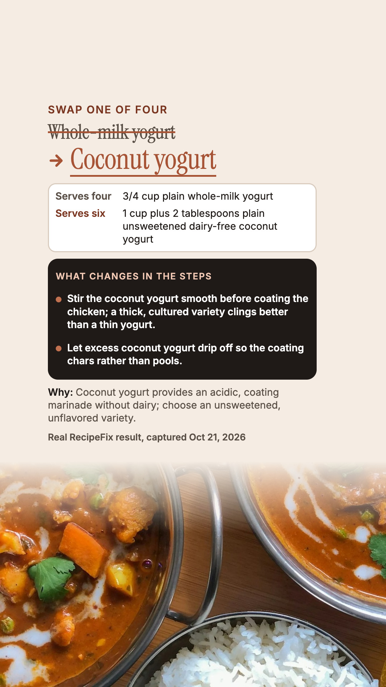
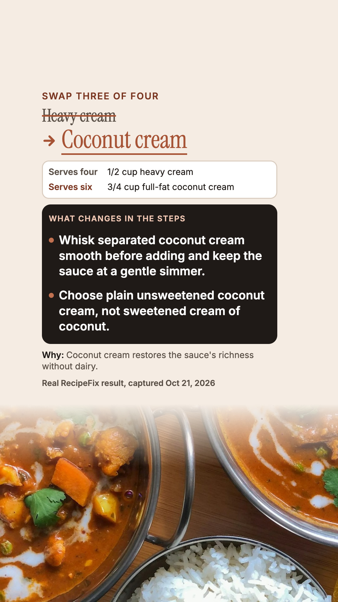
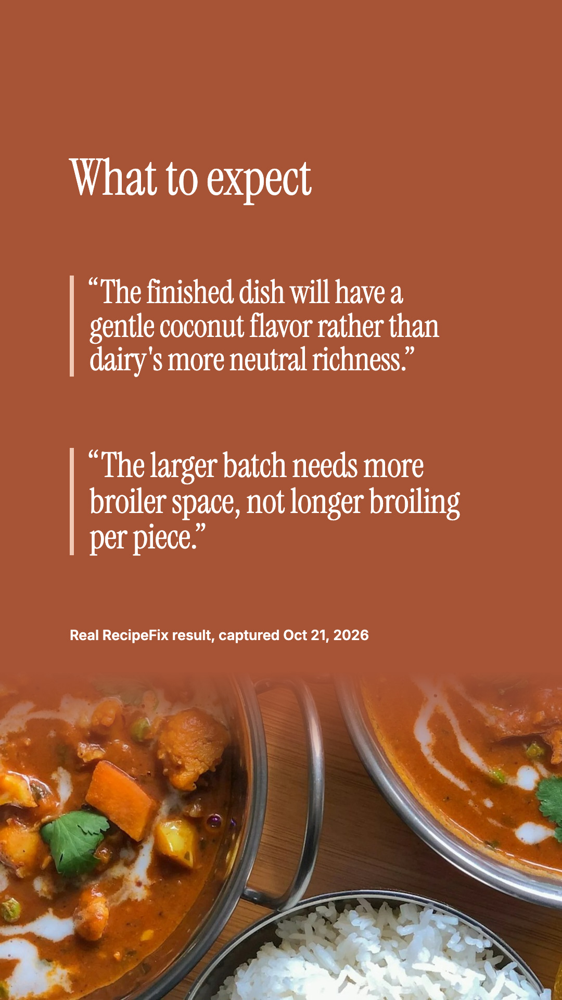
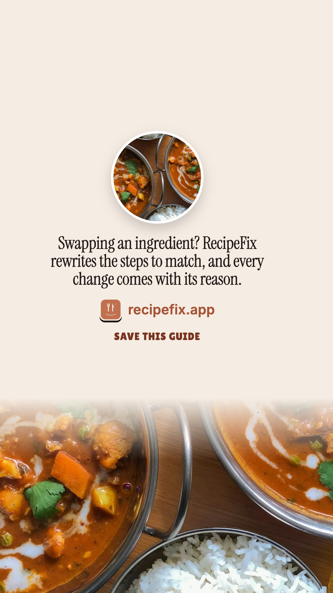
The ingredient swaps were the easy part of making this tikka masala dairy-free. What matters is what you do differently with each one: stir the coconut yogurt smooth, let it drip so the chicken chars, whisk the coconut cream and keep it at a gentle simmer. Real RecipeFix result (captured 2026-10-21), scaled 4 to 6 servings. The starting recipe is a RecipeFix Original, an AI-written home recipe. Save this for your next dairy-free curry. #dairyfree #dairyfreerecipes #tikkamasala #cookingtips #recipefix
media: runs/2026-10-27/slides-swaps-dairy-free/slides/ig-01-cover.jpg, runs/2026-10-27/slides-swaps-dairy-free/slides/ig-02-proof.jpg, runs/2026-10-27/slides-swaps-dairy-free/slides/ig-03-swap1.jpg, runs/2026-10-27/slides-swaps-dairy-free/slides/ig-04-swap2.jpg, runs/2026-10-27/slides-swaps-dairy-free/slides/ig-05-swap3.jpg, runs/2026-10-27/slides-swaps-dairy-free/slides/ig-06-swap4.jpg, runs/2026-10-27/slides-swaps-dairy-free/slides/ig-07-expect.jpg, runs/2026-10-27/slides-swaps-dairy-free/slides/ig-08-close.jpg
The ingredient swaps were the easy part of making this tikka masala dairy-free. What matters is what you do differently with each one: stir the coconut yogurt smooth, let it drip so the chicken chars, whisk the coconut cream and keep it at a gentle simmer. Real RecipeFix result (captured 2026-10-21), scaled 4 to 6 servings. The starting recipe is a RecipeFix Original, an AI-written home recipe. Save this for your next dairy-free curry. #dairyfree #dairyfreerecipes #tikkamasala #cookingtips #recipefix
media: runs/2026-10-27/slides-swaps-dairy-free/slides/tiktok-01-cover.jpg, runs/2026-10-27/slides-swaps-dairy-free/slides/tiktok-02-proof.jpg, runs/2026-10-27/slides-swaps-dairy-free/slides/tiktok-03-swap1.jpg, runs/2026-10-27/slides-swaps-dairy-free/slides/tiktok-04-swap2.jpg, runs/2026-10-27/slides-swaps-dairy-free/slides/tiktok-05-swap3.jpg, runs/2026-10-27/slides-swaps-dairy-free/slides/tiktok-06-swap4.jpg, runs/2026-10-27/slides-swaps-dairy-free/slides/tiktok-07-expect.jpg, runs/2026-10-27/slides-swaps-dairy-free/slides/tiktok-08-close.jpg · title: 4 dairy-free swaps and what to do differently with each
The dairy-free swaps were the easy part. What matters is what you do differently with each one. From a real RecipeFix result, a tikka masala scaled 4 to 6 servings. #dairyfree #cookingtips #recipefix
thread:
Coconut yogurt for whole-milk yogurt: Stir the coconut yogurt smooth before coating the chicken; a thick, cultured variety clings better than a thin yogurt. Let excess coconut yogurt drip off so the coating chars rather than pools.
Vegan butter for butter: Check that the vegan butter contains no milk derivatives.
Coconut cream for heavy cream: Whisk separated coconut cream smooth before adding and keep the sauce at a gentle simmer. Choose plain unsweetened coconut cream, not sweetened cream of coconut.
Soy cooking cream for heavy cream: Keep the sauce at a gentle simmer rather than a hard boil after adding soy cooking cream.
Starting recipe: a RecipeFix Original, an AI-written home recipe. Real RecipeFix result, captured Oct 21, 2026.
media: runs/2026-10-27/slides-swaps-dairy-free/slides/ig-01-cover.jpg, runs/2026-10-27/slides-swaps-dairy-free/slides/ig-03-swap1.jpg, runs/2026-10-27/slides-swaps-dairy-free/slides/ig-04-swap2.jpg, runs/2026-10-27/slides-swaps-dairy-free/slides/ig-05-swap3.jpg
The dairy-free swaps were the easy part. What matters is what you do differently with each one. From a real RecipeFix result, a tikka masala scaled 4 to 6 servings. #dairyfree #cookingtips #recipefix
thread:
Coconut yogurt for whole-milk yogurt: Stir the coconut yogurt smooth before coating the chicken; a thick, cultured variety clings better than a thin yogurt. Let excess coconut yogurt drip off so the coating chars rather than pools.
Vegan butter for butter: Check that the vegan butter contains no milk derivatives.
Coconut cream for heavy cream: Whisk separated coconut cream smooth before adding and keep the sauce at a gentle simmer. Choose plain unsweetened coconut cream, not sweetened cream of coconut.
Soy cooking cream for heavy cream: Keep the sauce at a gentle simmer rather than a hard boil after adding soy cooking cream.
Starting recipe: a RecipeFix Original, an AI-written home recipe. Real RecipeFix result, captured Oct 21, 2026.
media: runs/2026-10-27/slides-swaps-dairy-free/slides/ig-01-cover.jpg, runs/2026-10-27/slides-swaps-dairy-free/slides/ig-03-swap1.jpg, runs/2026-10-27/slides-swaps-dairy-free/slides/ig-04-swap2.jpg, runs/2026-10-27/slides-swaps-dairy-free/slides/ig-05-swap3.jpg
Stir the coconut yogurt smooth before coating the chicken; a thick, cultured variety clings better than a thin yogurt. | Let excess coconut yogurt drip off so the coating chars rather than pools. | Check that the vegan butter contains no milk derivatives. | Whisk separated coconut cream smooth before adding and keep the sauce at a gentle simmer. | Choose plain unsweetened coconut cream, not sweetened cream of coconut. | Keep the sauce at a gentle simmer rather than a hard boil after adding soy cooking cream.
| PASS | proof.verbatim | every quote is a verbatim substring of the stored result (src/data/landingRealResult.ts @ a82f8bb9, captured 2026-10-21) |
| PASS | ig-1:file | jpeg 1080×1350 |
| PASS | ig-1-cover:still.canvas | 1080×1350 |
| PASS | ig-1-cover:still.text_readback | 5 lines held to read-back, min similarity 1.00; 0 single-glyph lines checked by eye only (OCR vision: 37 words, file: 51 words, inverted: 56 words, rules removed: 51 words, white-text mask: 14 words, dark-text mask: 47 words) |
| PASS | ig-1-cover:still.no_artefacts | no [object Object] / undefined / NaN / braces read on the image |
| PASS | ig-1-cover:still.safe_zone | 35 word boxes inside x 60–1020, y 60–1290 |
| PASS | ig-1-cover:still.text_overlap | no two intended lines overprint each other |
| PASS | ig-1-cover:still.text_size | every line's median OCR word height ≥ 22px |
| PASS | ig-1-cover:still.contrast | min 5.38:1 over 35 word boxes (WCAG AA 4.5:1) |
| PASS | ig-2:file | jpeg 1080×1350 |
| PASS | ig-2-proof:still.canvas | 1080×1350 |
| PASS | ig-2-proof:still.text_readback | 4 lines held to read-back, min similarity 1.00; 0 single-glyph lines checked by eye only (OCR vision: 76 words, file: 73 words, inverted: 73 words, rules removed: 73 words, white-text mask: 39 words, dark-text mask: 87 words) |
| PASS | ig-2-proof:still.no_artefacts | no [object Object] / undefined / NaN / braces read on the image |
| PASS | ig-2-proof:still.safe_zone | 25 word boxes inside x 60–1020, y 60–1290 |
| PASS | ig-2-proof:still.text_overlap | no two intended lines overprint each other |
| PASS | ig-2-proof:still.text_size | every line's median OCR word height ≥ 22px |
| PASS | ig-2-proof:still.contrast | min 6.74:1 over 25 word boxes (WCAG AA 4.5:1) |
| PASS | ig-3:file | jpeg 1080×1350 |
| PASS | ig-3-swap1:still.canvas | 1080×1350 |
| PASS | ig-3-swap1:still.text_readback | 12 lines held to read-back, min similarity 1.00; 0 single-glyph lines checked by eye only (OCR vision: 89 words, file: 92 words, inverted: 87 words, rules removed: 86 words, white-text mask: 51 words, dark-text mask: 94 words) |
| PASS | ig-3-swap1:still.no_artefacts | no [object Object] / undefined / NaN / braces read on the image |
| PASS | ig-3-swap1:still.safe_zone | 82 word boxes inside x 60–1020, y 60–1290 |
| PASS | ig-3-swap1:still.text_overlap | no two intended lines overprint each other |
| PASS | ig-3-swap1:still.text_size | every line's median OCR word height ≥ 22px |
| PASS | ig-3-swap1:still.contrast | min 4.61:1 over 82 word boxes (WCAG AA 4.5:1) |
| PASS | ig-4:file | jpeg 1080×1350 |
| PASS | ig-4-swap2:still.canvas | 1080×1350 |
| PASS | ig-4-swap2:still.text_readback | 11 lines held to read-back, min similarity 1.00; 0 single-glyph lines checked by eye only (OCR vision: 56 words, file: 54 words, inverted: 54 words, rules removed: 53 words, white-text mask: 20 words, dark-text mask: 54 words) |
| PASS | ig-4-swap2:still.no_artefacts | no [object Object] / undefined / NaN / braces read on the image |
| PASS | ig-4-swap2:still.safe_zone | 50 word boxes inside x 60–1020, y 60–1290 |
| PASS | ig-4-swap2:still.text_overlap | no two intended lines overprint each other |
| PASS | ig-4-swap2:still.text_size | every line's median OCR word height ≥ 22px |
| PASS | ig-4-swap2:still.contrast | min 4.61:1 over 50 word boxes (WCAG AA 4.5:1) |
| PASS | ig-5:file | jpeg 1080×1350 |
| PASS | ig-5-swap3:still.canvas | 1080×1350 |
| PASS | ig-5-swap3:still.text_readback | 12 lines held to read-back, min similarity 1.00; 0 single-glyph lines checked by eye only (OCR vision: 70 words, file: 71 words, inverted: 67 words, rules removed: 67 words, white-text mask: 38 words, dark-text mask: 71 words) |
| PASS | ig-5-swap3:still.no_artefacts | no [object Object] / undefined / NaN / braces read on the image |
| PASS | ig-5-swap3:still.safe_zone | 63 word boxes inside x 60–1020, y 60–1290 |
| PASS | ig-5-swap3:still.text_overlap | no two intended lines overprint each other |
| PASS | ig-5-swap3:still.text_size | every line's median OCR word height ≥ 22px |
| PASS | ig-5-swap3:still.contrast | min 4.63:1 over 63 word boxes (WCAG AA 4.5:1) |
| PASS | ig-6:file | jpeg 1080×1350 |
| PASS | ig-6-swap4:still.canvas | 1080×1350 |
| PASS | ig-6-swap4:still.text_readback | 12 lines held to read-back, min similarity 1.00; 0 single-glyph lines checked by eye only (OCR vision: 75 words, file: 71 words, inverted: 73 words, rules removed: 71 words, white-text mask: 32 words, dark-text mask: 71 words) |
| PASS | ig-6-swap4:still.no_artefacts | no [object Object] / undefined / NaN / braces read on the image |
| PASS | ig-6-swap4:still.safe_zone | 66 word boxes inside x 60–1020, y 60–1290 |
| PASS | ig-6-swap4:still.text_overlap | no two intended lines overprint each other |
| PASS | ig-6-swap4:still.text_size | every line's median OCR word height ≥ 22px |
| PASS | ig-6-swap4:still.contrast | min 4.61:1 over 66 word boxes (WCAG AA 4.5:1) |
| PASS | ig-7:file | jpeg 1080×1350 |
| PASS | ig-7-expect:still.canvas | 1080×1350 |
| PASS | ig-7-expect:still.text_readback | 4 lines held to read-back, min similarity 1.00; 0 single-glyph lines checked by eye only (OCR vision: 37 words, file: 37 words, inverted: 37 words, rules removed: 37 words, white-text mask: 37 words, dark-text mask: 0 words) |
| PASS | ig-7-expect:still.no_artefacts | no [object Object] / undefined / NaN / braces read on the image |
| PASS | ig-7-expect:still.safe_zone | 35 word boxes inside x 60–1020, y 60–1290 |
| PASS | ig-7-expect:still.text_overlap | no two intended lines overprint each other |
| PASS | ig-7-expect:still.text_size | every line's median OCR word height ≥ 22px |
| PASS | ig-7-expect:still.contrast | min 5.29:1 over 35 word boxes (WCAG AA 4.5:1) |
| PASS | ig-8:file | jpeg 1080×1350 |
| PASS | ig-8-close:still.canvas | 1080×1350 |
| PASS | ig-8-close:still.text_readback | 3 lines held to read-back, min similarity 1.00; 0 single-glyph lines checked by eye only (OCR vision: 20 words, file: 24 words, inverted: 21 words, rules removed: 24 words, white-text mask: 1 words, dark-text mask: 23 words) |
| PASS | ig-8-close:still.no_artefacts | no [object Object] / undefined / NaN / braces read on the image |
| PASS | ig-8-close:still.safe_zone | 19 word boxes inside x 60–1020, y 60–1290 |
| PASS | ig-8-close:still.text_overlap | no two intended lines overprint each other |
| PASS | ig-8-close:still.text_size | every line's median OCR word height ≥ 22px |
| PASS | ig-8-close:still.contrast | min 4.69:1 over 19 word boxes (WCAG AA 4.5:1) |
| PASS | tiktok-1:file | jpeg 1080×1920 |
| PASS | tiktok-1-cover:still.canvas | 1080×1920 |
| PASS | tiktok-1-cover:still.text_readback | 5 lines held to read-back, min similarity 1.00; 0 single-glyph lines checked by eye only (OCR vision: 37 words, file: 56 words, inverted: 65 words, rules removed: 58 words, white-text mask: 16 words, dark-text mask: 68 words) |
| PASS | tiktok-1-cover:still.no_artefacts | no [object Object] / undefined / NaN / braces read on the image |
| PASS | tiktok-1-cover:still.safe_zone | 35 word boxes inside x 120–900, y 270–1250 |
| PASS | tiktok-1-cover:still.text_overlap | no two intended lines overprint each other |
| PASS | tiktok-1-cover:still.text_size | every line's median OCR word height ≥ 22px |
| PASS | tiktok-1-cover:still.contrast | min 5.38:1 over 35 word boxes (WCAG AA 4.5:1) |
| PASS | tiktok-2:file | jpeg 1080×1920 |
| PASS | tiktok-2-proof:still.canvas | 1080×1920 |
| PASS | tiktok-2-proof:still.text_readback | 4 lines held to read-back, min similarity 1.00; 0 single-glyph lines checked by eye only (OCR vision: 77 words, file: 82 words, inverted: 80 words, rules removed: 81 words, white-text mask: 27 words, dark-text mask: 91 words) |
| PASS | tiktok-2-proof:still.no_artefacts | no [object Object] / undefined / NaN / braces read on the image |
| PASS | tiktok-2-proof:still.safe_zone | 25 word boxes inside x 120–900, y 270–1250 |
| PASS | tiktok-2-proof:still.text_overlap | no two intended lines overprint each other |
| PASS | tiktok-2-proof:still.text_size | every line's median OCR word height ≥ 22px |
| PASS | tiktok-2-proof:still.contrast | min 5.71:1 over 25 word boxes (WCAG AA 4.5:1) |
| PASS | tiktok-3:file | jpeg 1080×1920 |
| PASS | tiktok-3-swap1:still.canvas | 1080×1920 |
| PASS | tiktok-3-swap1:still.text_readback | 12 lines held to read-back, min similarity 1.00; 0 single-glyph lines checked by eye only (OCR vision: 90 words, file: 101 words, inverted: 94 words, rules removed: 90 words, white-text mask: 52 words, dark-text mask: 110 words) |
| PASS | tiktok-3-swap1:still.no_artefacts | no [object Object] / undefined / NaN / braces read on the image |
| PASS | tiktok-3-swap1:still.safe_zone | 82 word boxes inside x 120–900, y 270–1250 |
| PASS | tiktok-3-swap1:still.text_overlap | no two intended lines overprint each other |
| PASS | tiktok-3-swap1:still.text_size | every line's median OCR word height ≥ 22px |
| PASS | tiktok-3-swap1:still.contrast | min 4.64:1 over 82 word boxes (WCAG AA 4.5:1) |
| PASS | tiktok-4:file | jpeg 1080×1920 |
| PASS | tiktok-4-swap2:still.canvas | 1080×1920 |
| PASS | tiktok-4-swap2:still.text_readback | 11 lines held to read-back, min similarity 1.00; 0 single-glyph lines checked by eye only (OCR vision: 56 words, file: 61 words, inverted: 63 words, rules removed: 60 words, white-text mask: 21 words, dark-text mask: 68 words) |
| PASS | tiktok-4-swap2:still.no_artefacts | no [object Object] / undefined / NaN / braces read on the image |
| PASS | tiktok-4-swap2:still.safe_zone | 50 word boxes inside x 120–900, y 270–1250 |
| PASS | tiktok-4-swap2:still.text_overlap | no two intended lines overprint each other |
| PASS | tiktok-4-swap2:still.text_size | every line's median OCR word height ≥ 22px |
| PASS | tiktok-4-swap2:still.contrast | min 4.64:1 over 50 word boxes (WCAG AA 4.5:1) |
| PASS | tiktok-5:file | jpeg 1080×1920 |
| PASS | tiktok-5-swap3:still.canvas | 1080×1920 |
| PASS | tiktok-5-swap3:still.text_readback | 12 lines held to read-back, min similarity 1.00; 0 single-glyph lines checked by eye only (OCR vision: 70 words, file: 79 words, inverted: 76 words, rules removed: 87 words, white-text mask: 39 words, dark-text mask: 78 words) |
| PASS | tiktok-5-swap3:still.no_artefacts | no [object Object] / undefined / NaN / braces read on the image |
| PASS | tiktok-5-swap3:still.safe_zone | 63 word boxes inside x 120–900, y 270–1250 |
| PASS | tiktok-5-swap3:still.text_overlap | no two intended lines overprint each other |
| PASS | tiktok-5-swap3:still.text_size | every line's median OCR word height ≥ 22px |
| PASS | tiktok-5-swap3:still.contrast | min 4.63:1 over 63 word boxes (WCAG AA 4.5:1) |
| PASS | tiktok-6:file | jpeg 1080×1920 |
| PASS | tiktok-6-swap4:still.canvas | 1080×1920 |
| PASS | tiktok-6-swap4:still.text_readback | 12 lines held to read-back, min similarity 1.00; 0 single-glyph lines checked by eye only (OCR vision: 75 words, file: 79 words, inverted: 85 words, rules removed: 81 words, white-text mask: 33 words, dark-text mask: 85 words) |
| PASS | tiktok-6-swap4:still.no_artefacts | no [object Object] / undefined / NaN / braces read on the image |
| PASS | tiktok-6-swap4:still.safe_zone | 66 word boxes inside x 120–900, y 270–1250 |
| PASS | tiktok-6-swap4:still.text_overlap | no two intended lines overprint each other |
| PASS | tiktok-6-swap4:still.text_size | every line's median OCR word height ≥ 22px |
| PASS | tiktok-6-swap4:still.contrast | min 4.64:1 over 66 word boxes (WCAG AA 4.5:1) |
| PASS | tiktok-7:file | jpeg 1080×1920 |
| PASS | tiktok-7-expect:still.canvas | 1080×1920 |
| PASS | tiktok-7-expect:still.text_readback | 4 lines held to read-back, min similarity 1.00; 0 single-glyph lines checked by eye only (OCR vision: 37 words, file: 47 words, inverted: 44 words, rules removed: 64 words, white-text mask: 40 words, dark-text mask: 21 words) |
| PASS | tiktok-7-expect:still.no_artefacts | no [object Object] / undefined / NaN / braces read on the image |
| PASS | tiktok-7-expect:still.safe_zone | 35 word boxes inside x 120–900, y 270–1250 |
| PASS | tiktok-7-expect:still.text_overlap | no two intended lines overprint each other |
| PASS | tiktok-7-expect:still.text_size | every line's median OCR word height ≥ 22px |
| PASS | tiktok-7-expect:still.contrast | min 5.29:1 over 35 word boxes (WCAG AA 4.5:1) |
| PASS | tiktok-8:file | jpeg 1080×1920 |
| PASS | tiktok-8-close:still.canvas | 1080×1920 |
| PASS | tiktok-8-close:still.text_readback | 3 lines held to read-back, min similarity 1.00; 0 single-glyph lines checked by eye only (OCR vision: 20 words, file: 44 words, inverted: 35 words, rules removed: 42 words, white-text mask: 1 words, dark-text mask: 37 words) |
| PASS | tiktok-8-close:still.no_artefacts | no [object Object] / undefined / NaN / braces read on the image |
| PASS | tiktok-8-close:still.safe_zone | 19 word boxes inside x 120–900, y 270–1250 |
| PASS | tiktok-8-close:still.text_overlap | no two intended lines overprint each other |
| PASS | tiktok-8-close:still.text_size | every line's median OCR word height ≥ 22px |
| PASS | tiktok-8-close:still.contrast | min 4.65:1 over 19 word boxes (WCAG AA 4.5:1) |
| PASS | photo.aspect:photo-chicken-tikka-masala-1080x760.jpg | crop 1600×1126 (aspect 1.4210) drawn at 1080×760 (1.4211); downscale only |
| PASS | photo.aspect:photo-chicken-tikka-masala-344x344.jpg | crop 1600×1600 (aspect 1.0000) drawn at 344×344 (1.0000); downscale only |
| PASS | photo.aspect:photo-chicken-tikka-masala-1080x820.jpg | crop 1600×1215 (aspect 1.3169) drawn at 1080×820 (1.3171); downscale only |
| PASS | photo.aspect:photo-chicken-tikka-masala-284x284.jpg | crop 1600×1600 (aspect 1.0000) drawn at 284×284 (1.0000); downscale only |
| PASS | photo.aspect:photo-chicken-tikka-masala-1080x630.jpg | crop 1600×933 (aspect 1.7149) drawn at 1080×630 (1.7143); downscale only |
| PASS | payload.counts | 8 Instagram slides, 8 TikTok photos, 4 X images |
| PASS | copy.platform_rules | lengths, X titles, no link in the X post, 3–5 hashtags incl. #recipefix, no forbidden claims, no bait, reads human |
| PASS | knowledge.product_posts | pack ad17c991 has a release receipt |